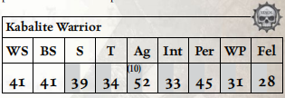

每一位阴谋团武士都是致命而施虐成性的杀手，精通刀剑与步枪，受残忍与野蛮的野心所驱动。他们在无数同类中脱颖而出，得以参与其阴谋团的实体空间劫掠，品尝过比低等黑暗灵族被迫赖以生存的匮乏而间接的折磨更为强烈的痛苦。
此数据代表一名来自影棘阴谋团、裂爪阴谋团或任何其他阴谋团的普通半生子黑暗灵族战士。在给定的一组阴谋团武士中，可能有一两人已积累了足够的财富与权力，得以使用并维护更强大或不寻常的武器。

移动： 5/10/15/30 承伤： 10
护甲： 阴谋团护甲（全身4）。 总坚韧加值：3
技能： 杂技（Ag），警觉（Per），化学使用（Int），通用学识（黑暗灵族）（Int），欺诈（Fel），闪避（Ag），恐吓（S）+10，无声移动（Ag），巧手（Ag）。
天赋： 猫落地，黑暗灵魂，死眼射击，困难目标，强化感官（听觉、视觉），阴谋团武器训练，闪电反射，怜悯弱者，冲刺。
特性： 黑暗视觉，痛苦即力量，超自然敏捷（x2）。
武器： 毒晶步枪（基础；80m；S/3/5；1d10+2 R；穿甲3；弹匣200；装填2整轮；毒素）或（近战；1d10+3 R；穿甲2），单分子刀（近战；1d5+3 R；穿甲2）。
装备： 各类可怖战利品，2个毒晶步枪弹匣。